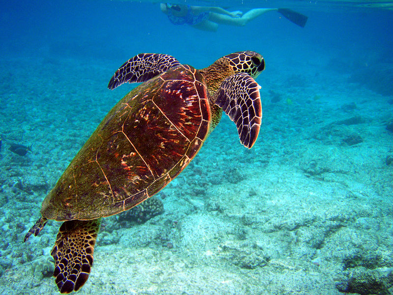

Turtles are reptiles of the order Testudines (or Chelonii) characterised by a special bony or cartilaginous shell developed from their ribs and acting as a shield.[4] "Turtle" may refer to the order as a whole (American English) or to fresh-water and sea-dwelling testudines (British English). The order Testudines includes both extant (living) and extinct species. The earliest known members of this group date from 157 million years ago,making turtles one of the oldest reptile groups and a more ancient group than snakes or crocodilians. Of the 327 known species alive today, some are highly endangered.
Turtles are ectotherms—animals commonly called cold-blooded—meaning that their internal temperature varies according to the ambient environment. However, because of their high metabolic rate, leatherback sea turtles have a body temperature that is noticeably higher than that of the surrounding water. Turtles are classified as amniotes, along with other reptiles, birds, and mammals. Like other amniotes, turtles breathe air and do not lay eggs underwater, although many species live in or around water.
